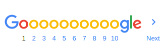

About 2,430,000 results(0.52 seconds)
arstechnica.com/.../with-zero-coding-experience-artist-building-189-web...
Jul 26,2013 - One of Jennifer Dewalt's creations, this webpage lets visitors create paintings in ... Build a different website every day for 180 consecutive days.
blog.jenniferdewalt.com/post/.../im-learning-to-code-by-building-180-websites-in
Jul 24, 2013 - Build a different website every day for 180 consecutive days. Every website must be accompanied by a blog post. Any code I write must be ...
swatikumar16.github.io/google-homepage/
With zero coding experience, artist building 180 webpages . ... days ago, having never done any programming in her life, Jennifer Dewalt built her first webpage.
https://www.reddit.com/r/InternetIsBeautiful/.../watch_this_webpage_code_itself/
Apr 1, 2015 - Medal of BeautyWatch this webpage code itself. (codepen.io). submitted 1 year ago by fyrie · 58 comments; share. loading... all 58 comments.
https://www.codecademy.com/courses/web-beginner-en-LceTK/
Build Your Own Webpage. What you'll be making. Before we ask you to write a bunch of code, we think it's helpful for you to see exactly what you'll be making in ...
www.wix.com/
Create a free website with Wix.com. Customize with Wix' free website builder, no coding skills needed. Choose a design, begin customizing and be online today!
www.inc.com/the-build-network/how-do-we-know-they-need-this-webpage.html
Aug 2, 2013 - During a recent visit to HubSpot's headquarters, members of the Build team got to see the remnants of one of the inbound marketing firm's ...
www.websitebuilderexpert.com > Website Design
You're not alone as for most people, building a website online is still a bit of a mystery. For most people (including us a few years ago), creating a website is ...
collegeinfogeek.com > Blog > Internet
May 16, 2016 - Having a personal website is one of the most important things for building your brand. Let's learn how to make one in 5 steps.
websitesetup.org/
Learn how to make a website and set it up. This site contains different tutorials on how to build a website using WordPress, Joomla, Drupal & HTML.
You've visited this page 2 times. Last visit: 7/23/15
Searches related to build this webpage
| how to build a website |
how to create a webpage |
| how to build a webpage for free |
build your own webpage |
| build a webpage google |
how to build a webpage from scratch |
| how to build a web page for free |
how to build a webpage using html |
